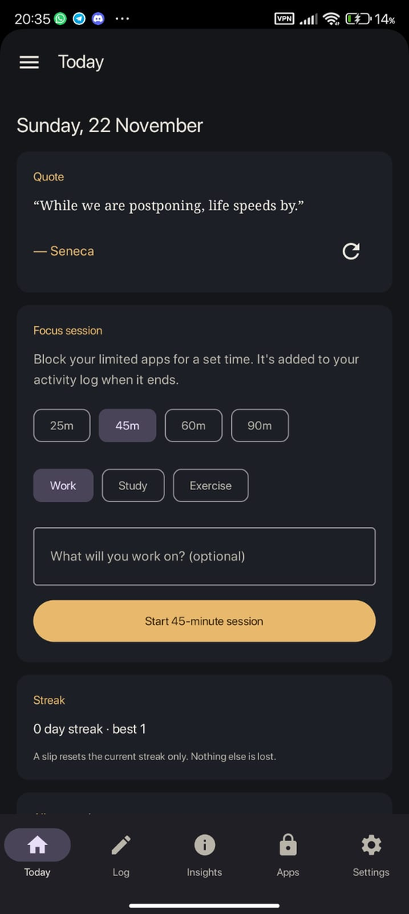
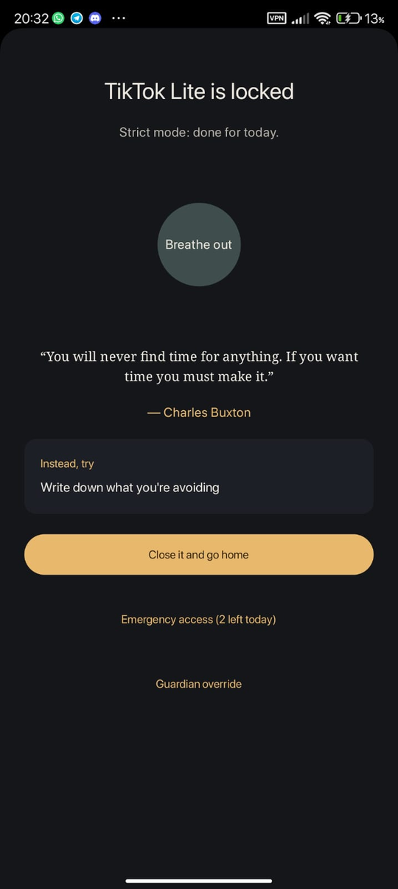
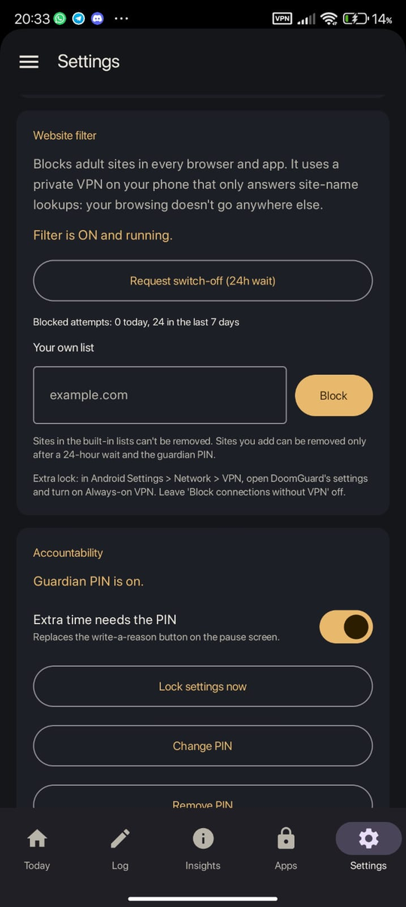

Pick the apps. Set the time. Let it step in.
You choose which apps drain you and how long each gets. DoomGuard watches the clock so you don't have to.

Choose your apps
Turn on the ones you want limited and set minutes per day, with different limits for weekends.

Go about your day
Start a focus session, or glance at where your time went. A warning arrives before you hit the limit.

Meet the pause
A breathing circle, a thought about the choice you're making, and something better to do.
“How we spend our days is, of course, how we spend our lives.”Annie Dillard
A pause built to make you think
Every pause screen shows a line chosen to question the habit, not to scold you. Extra time is possible, but it comes in small pieces, with a wait before each one, and then the app locks for the day.

Give the PIN to someone you trust
Limits are easy to talk yourself out of. With a guardian PIN, every change that loosens them needs the person who holds it: raising a limit, ending a session early, or switching the filter off.
- Overrides and permission changes are written to a log you can read.
- Optional uninstall protection stops the app being removed on a whim.
- A few emergency exits a day, for calls and things that can't wait.


Block sites. See the week.
The website filter blocks adult sites in every browser and app, plus any site you add. It works with a private on-phone filter, so your browsing goes nowhere else.
Insights show a seven-day chart, your top apps and what usually sets you off, so you can see the pattern before you try to change it.
Install it in five steps
- Tap Download for Android on your phone.
- Open the file. Allow "Install unknown apps" if Android asks. If Play Protect warns you, choose "Install anyway", because the app isn't from the Play Store.
- Open DoomGuard and allow Usage access and Display over other apps.
- Choose the apps to limit and set their daily time.
- Optional: ask someone you trust to set the guardian PIN, and switch on the website filter.
Want to check the file? The release page lists its SHA-256 checksum.
Keep it running
Some phones close background apps to save battery. Set these once so limits keep working.
Xiaomi, Redmi, Poco
Open Settings, Apps, DoomGuard. Turn on Autostart, set Battery saver to "No restrictions", and allow "Display pop-up windows while running in the background". Then lock DoomGuard in the recent apps list.
Samsung, Tecno, Infinix, Oppo
Set DoomGuard's battery use to "Unrestricted" and allow it to start automatically.
For the website filter
Set Android's Private DNS to Off or Automatic, and turn off "Use secure DNS" in Chrome. A browser that uses its own secure DNS skips the filter.
What it can't do
DoomGuard is a speed bump you choose, not a lock. Android doesn't let any app stop someone from force-stopping it, revoking its permissions or clearing its data, so DoomGuard records those events in the guardian log instead. It can't see cloned apps from "Dual apps" or "Second space", and only one VPN can run at a time, which matters if you already use a VPN app.